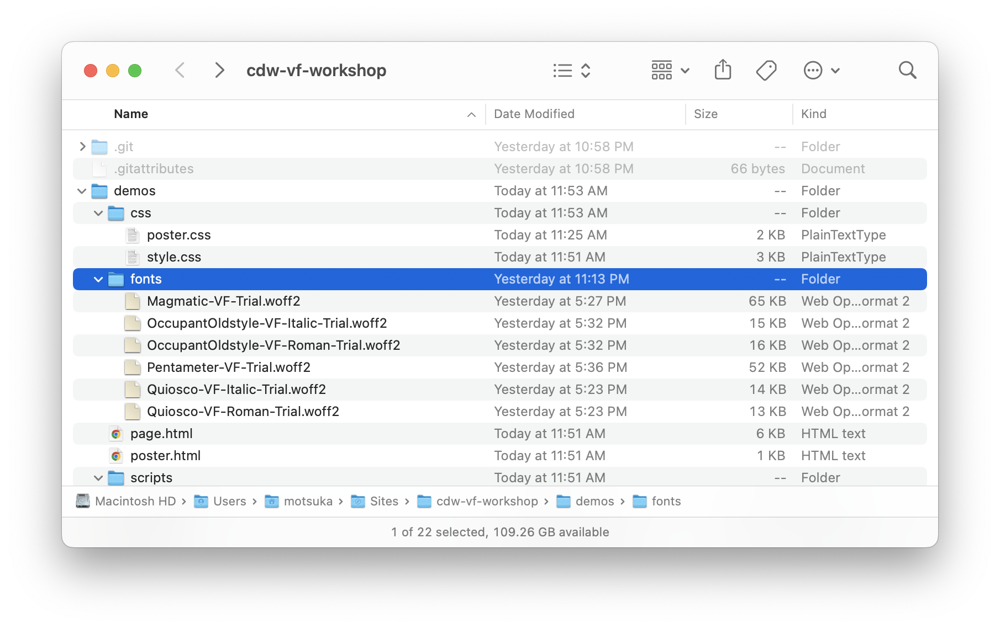
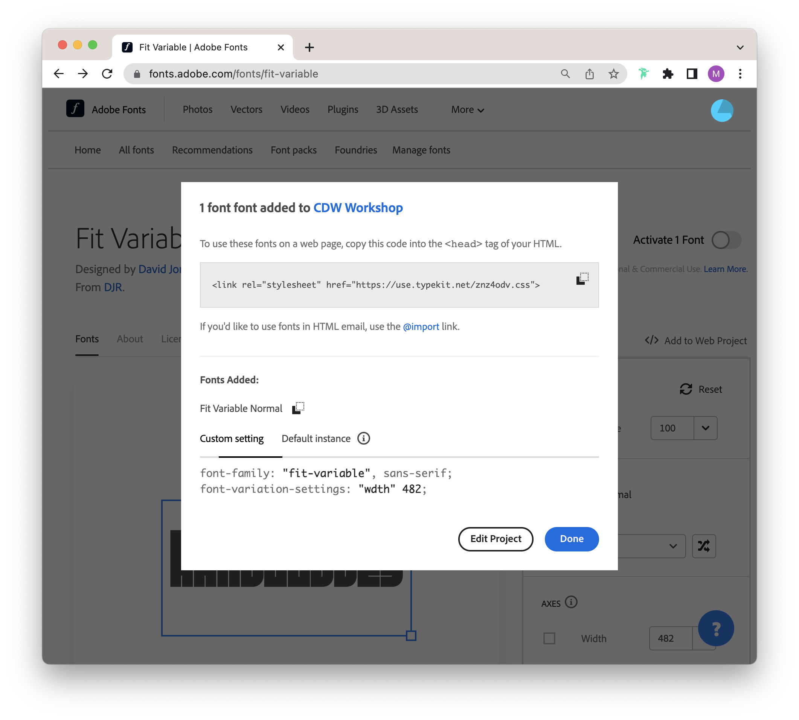
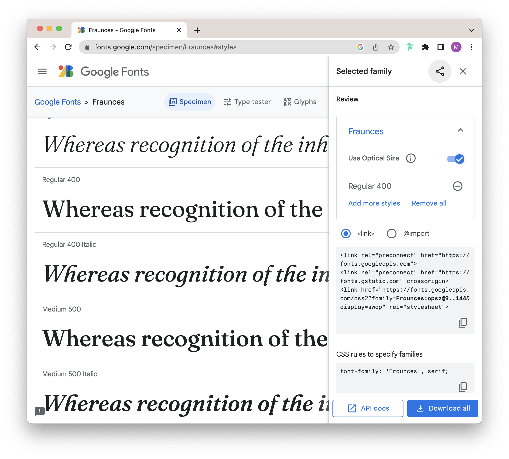
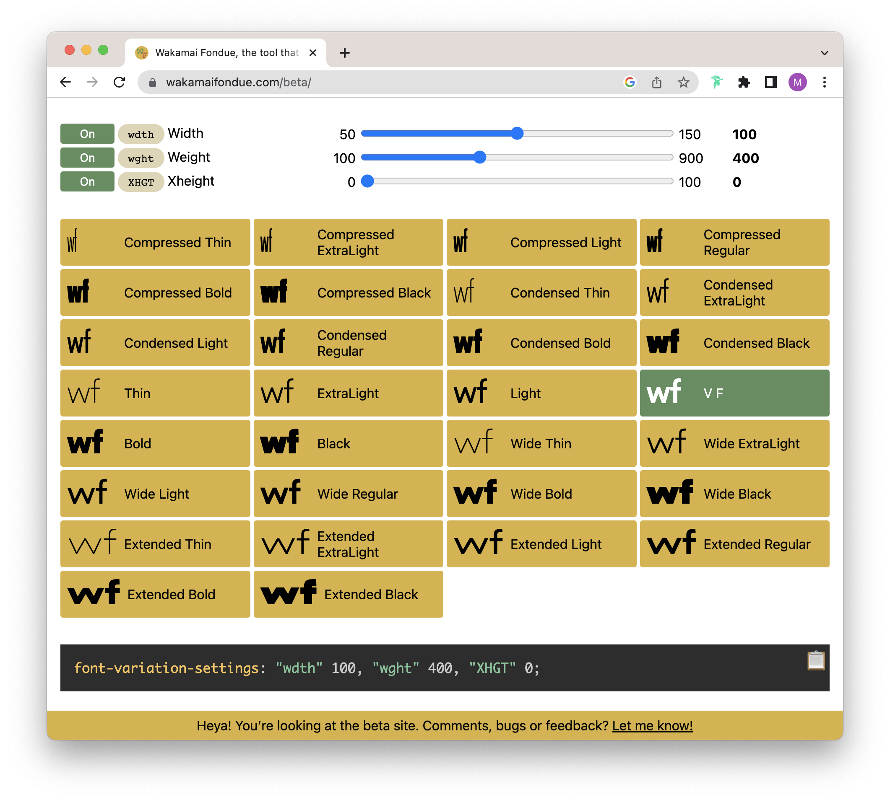

Setup
Part 1. Loading Variable Fonts
There are three ways to load fonts:
- 1. Self-hosted (You have the font files)
- 2. Distributor-hosted (Type Network)
- 3. Subscription-based (Adobe, Google)

Self-hosted
CSS
@font-face {
font-family: 'Occupant Oldstyle VF';
src:
url('fonts/Magmatic-VF-Trial.woff2')
format('woff2-variations');
font-stretch: 50% 150%;
font-weight: 100 900;
}
body {
font-family: 'Occupant Oldstyle VF';
}
Standard Axis Tags
| Axis Tag | Description | Valid Range | CSS Equivalent |
|---|---|---|---|
| wght | weight | 1—1000 | font-weight |
| wdth | width | >0, percent of normal width | font-stretch |
| opsz | optical sizing | >0, point sizes | |
| ital | italicization | 0—1 | font-style |
| slnt | slant | -90—90 | font-style |

Adobe
- Navigate to Adobe Fonts
- Click on Add to Web Project
- Create a new web project
- Copy-paste the resulting code
CSS
body {
font-family: "fit-variable", sans-serif;
font-variation-settings: "wdth" 482;
}
HTML HEAD
<link rel="stylesheet" href="https://use.typekit.net/znz4odv.css">

- Navigate to Google Fonts
- Select a Style of a font
- Turn on variable axes
- Copy-paste the resulting code
CSS
body {
font-family: 'Fraunces', serif;
}
HTML HEAD
<link rel="preconnect" href="https://fonts.googleapis.com"> <link rel="preconnect" href="https://fonts.gstatic.com" crossorigin> <link href="https://fonts.googleapis.com/css2?family=Fraunces:opsz@9..144&display=swap" rel="stylesheet">
Styling
Part 2. Using Variable Fonts

Understanding the Axes
Use a font like Font Goggles or an online tool like Wakami Fondue to understand the variable range of your typeface. (For Adobe/Google hosted fonts, check out the font detail pages for this info.)
body{
font-family: 'Variable Font';
/*this name should match the font-face rule you set up*/
font-variation-settings: 'wght' 400;
}
h1{
font-family: 'Another Multi-axis Variable Font';
font-variation-settings: 'wght' 300,'wdth' 120,'XHGT' 100;
}
Using Variation Settings
The font-variation-settings is the CSS property for accessing the variable font settings. It is followed by comma-separated assignments for each axis, in the format 'key' numericvalue.
:root{
--wght: 400;
--wdth: 100;
--XHGT: 0;
}
body{
font-family: 'Variable Font';
font-variation-settings: 'wght' var(--wght);
}
h1{
font-family: 'Another Multi-axis Variable Font';
font-variation-settings: 'wght' var(--wght),
'wdth' var(--wdth),'XHGT' var(--XHGT);
}
Using CSS Variables
It can be useful to setup CSS variables to assign into the font-variation-settings so that you can adjust each axis individually at each element. You can define CSS Variables by prefixing names with --.
Animations
Part 3. Updating Variable Fonts
.transition{
font-family: 'Magmatic VF';
font-variation-settings: 'wdth' var(--wdth),
'wght' var(--wght), 'XHGT' var(--XGHT);
--wght: 200;
transition: font-variation-settings 1s ease-in-out;
}
.transition:hover{
--wght: 700;
}
CSS Transitions
Once CSS Variables are setup, all you need to do to update the variable font is to update the axis variable. Here, we are updating the weight value on hover. CSS Transitions allow you to setup a smooth transition between those values.
CSS Transitions Syntax
| Property | Description | Example |
|---|---|---|
| transition-property | property being transitioned (or use transition-property: all) — see list of properties |
transition-property: background-color |
| transition-duration | duration of effect, in seconds (s) or milliseconds (ms) | transition-duration: 1s; |
| transition-timing-function | transition style — see common easing effects | transition-timing-function: ease-in; |
| transition-delay | delay until starting effect, in seconds (s) or milliseconds (ms) | transition-delay: 2s; |
h1{
animation: animateaxis 2s ease-in-out alternate
infinite;
}
@keyframes animateaxis{
0%{
font-variation-settings: 'wdth' 80, 'wght' 100,
'XHGT' 1;
}
100%{
font-variation-settings: 'wdth' 100, 'wght' 900,
'XHGT' 1;
}
}
CSS Animations
There are 2 steps to setting up a CSS Animation.
- Define the animation using @keyframes.
- Assign the animation to the desired element in CSS.
CSS Animations Syntax
| property | description | example |
|---|---|---|
| animation-name | identifier given to animation in @keyframes declarations, any name without spaces | animation-name: changecolor; |
| animation-duration | duration of animation, which is broken up into the waypoints defined in keyframes, in seconds (s) or milliseconds (ms) | animation-duration: 3.5s; |
| animation-timing-function | animation style, same as transitions | animation-timing-function: linear; |
| animation-delay | delay until starting animation, in seconds (s) or milliseconds (ms) | animation-delay: 0.2s; |
| animation-iteration-count | number of times the animation runs, infinite or numbers |
animation-iteration-count: 3; |
| animation-direction | from what direction the animation begins, normal, reverse, alternate, alternate-reverse |
animation-direction: alternate; |
| animation-play-state | whether to play or pause, running (default), paused |
animation-play-state: running; |
| animation-fill-mode | whether to apply styles before and after the animation executes, none (default), forwards, backwards, both |
animation-fill-mode: none; |